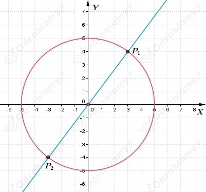
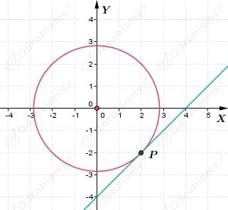
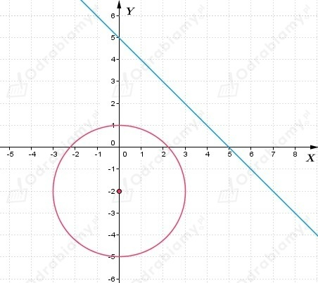

a)
Podstawiamy wartość y z drugiego równania do pierwszego i dostajemy
Zatem rozwiązaniem układu są dwie pary liczb
Interpretacja geometryczna układu równań

Okrąg i prosta mają dwa punkty wspólne: P1(3, 4) i P2(-3, -4).
b)
Podstawiamy wartość y z drugiego równania do pierwszego i dostajemy
Zatem rozwiązaniem układu jest para liczb
Interpretacja geometryczna układu równań

Okrąg i prosta mają jeden punkt wspólny: P(2, -2).
c)
Podstawiamy wartość y z drugiego równania do pierwszego i dostajemy
Równanie nie ma rozwiązań, więc układ równań jest sprzeczny.
Interpretacja geometryczna układu równań

Okrąg i prosta nie mają punktów wspólnych.
a)
Z treści zadania wiemy, że
Wyznaczamy współrzędne punktów przecięcia okręgu i prostej
Podstawiamy wartość y z drugiego równania do pierwszego i dostajemy
Zatem rozwiązaniem układu są dwie pary liczb
Możemy zapisać, że
Obliczamy długość cięciwy AB
b)
Z treści zadania wiemy, że
Wyznaczamy współrzędne punktów przecięcia okręgu i prostej
Podstawiamy wartość y z drugiego równania do pierwszego i dostajemy
Zatem rozwiązaniem układu są dwie pary liczb
Możemy zapisać, że
Obliczamy długość cięciwy AB
Równanie okręgu
Wiemy, że bok AB kwadratu ABCD jest zawarty w prostej
Należy wyznaczyć współrzędne wierzchołków kwadratu ABCD.
Wyznaczmy współrzędne punktu A i B rozwiązując układ równań
Podstawiamy wartość y z drugiego równania do pierwszego i dostajemy
Zatem rozwiązaniem układu są dwie pary liczb
Więc wierzchołek A ma współrzędne (-1, -3), a wierzchołek B ma współrzędne (3, -1).
Zauważamy, że punkt O(0, 0) jest środkiem przekątnej AC oraz A(-1, -3), zatem wierzchołek C
ma współrzędne (1, 3).
Natomiast punkt O(0, 0) jest również środkiem przekątnej BD oraz B(3, -1), zatem wierzchołek D
ma współrzędne (-3, 1).
Równanie okręgu
Wiemy, że jedna z przekątnych kwadratu ABCD jest zawarta w prostej
Zapiszmy równanie prostej w postaci kierunkowej
Należy wyznaczyć współrzędne wierzchołków kwadratu ABCD.
Wyznaczmy współrzędne wierzchołków kwadratu ABCD rozwiązując układ równań
Podstawiamy wartość y z drugiego równania do pierwszego i dostajemy
Zatem rozwiązaniem układu są dwie pary liczb
Więc wierzchołek A ma współrzędne (-1, -4), a wierzchołek C ma współrzędne (5, 4).
Zauważamy, że punkt S(2, 0) jest środkiem okręgu.
Prosta prostopadła do AC i przechodząca przez punkt S, to prosta na której leżą pozostałe dwa
wierzchołki kwadratu
Rozwiązujemy układ równań
Podstawiamy wartość y z drugiego równania do pierwszego i dostajemy
Zatem rozwiązaniem układu są dwie pary liczb
Więc wierzchołek D ma współrzędne (-2, 3), a wierzchołek B ma współrzędne (6, -3).